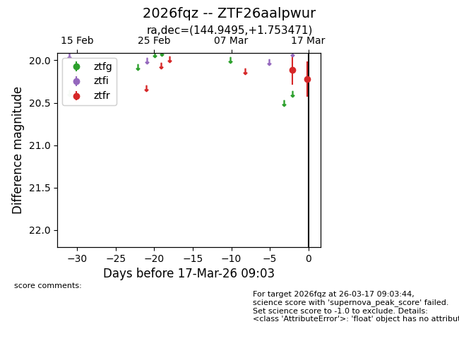
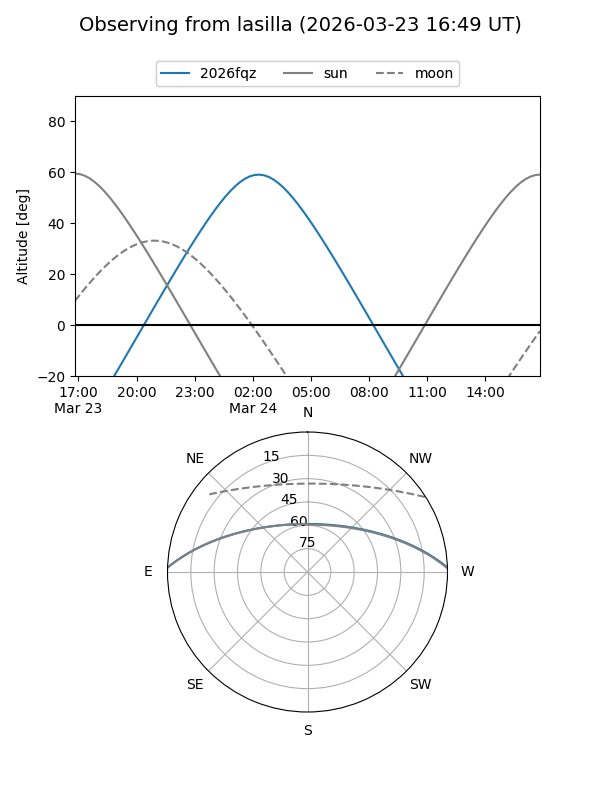
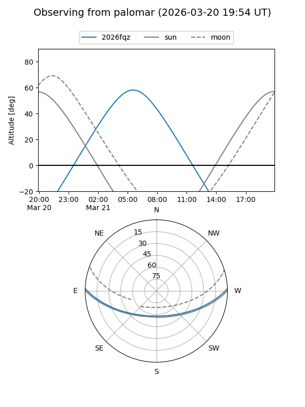
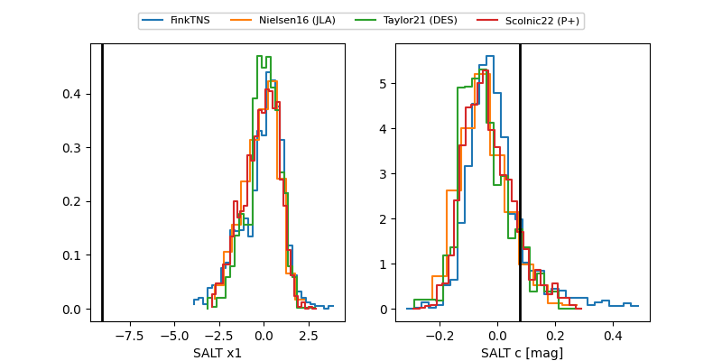

2026fqz
Target 2026fqz at 2026-03-17 09:05
Aliases and brokers:
FINK: link
Lasair: link
ALeRCE: link
TNS: link
YSE: link
alt names
ZTF26aalpwur (ztf,fink_ztf)
2026fqz (tns,yse)
Coordinates:
equatorial (ra, dec) = 144.9495,+1.75347
equatorial (HMS+DMS) = 09:39:47.89,+01:45:12.49
galactic (l, b) = (233.4957,+37.60617)
Flags:
Photometry:
last ztfr=20.22
2 ztfr detections
Lightcurve

Visibility


Additional plots
